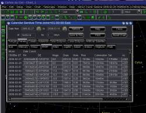

Version 3 beta 0.1.0
Première version beta et changement de compilateur, nous utilisons maintenant Lazarus/FreePascal!
 Le principal changement de cette version est uniquement technique: nous utilisons maintenant le compilateur Lazarus/FreePascal pour dévelloper le programme.
Le principal changement de cette version est uniquement technique: nous utilisons maintenant le compilateur Lazarus/FreePascal pour dévelloper le programme.
A cours terme cela ne change rien mais dans le future il est possible de créer des version native pour d'autres platformes comme FreeBSD ou Mac OS X.
Maintenant le logiciel est libre de bout en bout.
Utilisation de Gtk avec Linux.
{kind=link}
Le principal changement est pour les utilisateurs Linux: nous utilisons maintenant Gtk a la place de la version spécifique de Qt.
libborqt n'est plus necessaire mais vous devrez peut-être installer libgtk+1.2 et libgdk-pixbuf.
Il est possible d'utiliser un thème Gtk pour que l'affichage corresponde à vos préférences ou pour faciliter la vision nocturne.
Un bon endroit a visiter est http://themes.freshmeat.net/browse/923/
Si l'affichage est mauvais avec des caractères trop gros ou trop petit c'est probablement que que votre système n'a pas initialisé correctement l'environement Gtk1. Installer un de ces thèmes va corriger le problème.
Un jeu de bouton de différentes couleurs est disponible pour correspondre au thème. Le menu Configuration-Display permet de choisir ceux a utiliser pour le mode normal ou vision de nuit.
Vous pouvez créer vos propre jeux de bouton. Allez dans le répertoire data/Theme/ et copier default/ avec un nouveau nom. Vous pouvez maintenant remplacer chaque bouton dans le répertoire icon_color. Un script est disponible avec les sources pour faire les bouton monochrome a partir de ceux en couleur.
 Amélioration de la base de donnée d'observatoire
Amélioration de la base de donnée d'observatoire
La selection de l'observatoire est amélioré pour utiliser la base de donnée sql. Il est maintenant possible d'enregistrer l'altitude et la zone horaire pour un lieu. Une petite selection de lieu est installée la première fois que le programme est lancé. Vous pouvez ensuite installer tout les détails pour les pays qui vous interessent avec le bouton “Download country details” . Vous pouvez faire une recherche sur le nom avec le bouton Search ou trouver les lieux a une certaine distance avec la bouton Vicinity.
Autres changement :
Le calcul des lever / coucher est maintenant cohérent dans les diffférentes partie du programme. La précision est améliorée pour la Lune et les planètes.
L'impression des listes d'objets ou depuis le calendrier est améliorée.
Chaque écran de configuration qui demande un numéro de champ (field number) a un rappel des champs définit en bas de la page.
Vous pouvez directement mettre a jours les élements des comètes et astéroides depuis les écrans de configuration.
Les petit curseurs pour ajuster la taille des étoiles en mode paramétrique était trop difficile a utiliser.
Ils sont remplacé par les combinaison de touches suivantes:
- Faint stars size: ctrl+a ctrl+q
- Increment for bright stars: ctrl+w ctrl+s
- Contrast: ctrl+e crtl+d
- Color saturation: ctrl+r ctrl+f